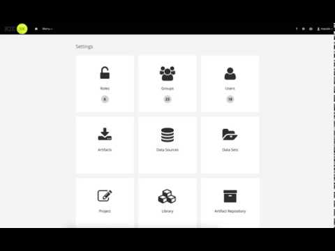

Data set editor for KIE Server custom queries
Custom queries feature in KIE Server has been out for quite a while and proved to be very useful. Although there was no integration with workbench to take advantage of when:
- working with subset of data from various tables that are not exposed via runtime views (processes or tasks)
- building data set entries for reporting purpose
- building dashboards
With version 7.8, jBPM is now equipped with data set editor for KIE Server custom queries, it allows users to:
- define (as data set) and test queries on remote KIE Servers
- save and edit existing data sets
- use defined data sets when building dashboards via Pages feature of workbench
Moreover, data set editor for KIE Server queries is built in a way that it ensures that queries are always send to all known kie servers when using managed mode. New KIE Servers connecting to controller (workbench) will also receive custom queries defined via data set editor.
See all this in action in short screencast

As usual, comments are more than welcome